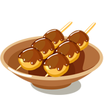
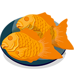
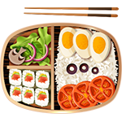
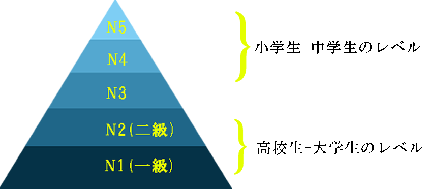

ABOUT
日本に興味を持ち始めたきっかけは何ですか。
日本伝統的なの文化の代表シンボル
日本の料理
日本の有名な所
日本伝統的なの文化の代表シンボル
-
招き猫
LUCKY CAT -
富士山
FUSI mountain -
達磨
Bodhidharma -
折り紙
The art of folding paper -
こい
KOI fish -
さくら(桜)
SAKURA
日本の食事文化
-

団子串
Dango -
お寿司
SUSHI -

鯛焼き
a fish‐shaped pancake -

お弁当
Japanese box lunch -
ラーメン
RAMEN-Japanese noodles -
茶道
Tea
日本語のレベル、基準は知っていますか。

言語学習は3つの主要なポイントから構成されている。
単語、文法
読解
聴解
このサイトを作った目的は。
毎日少しずつ勉強します。
気楽で簡単に覚える。
日本の有名な所。